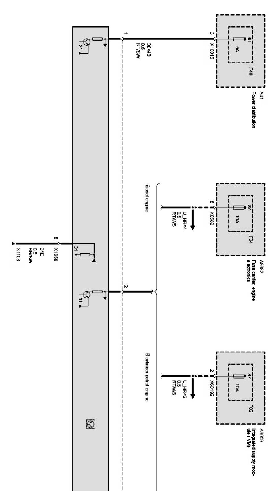
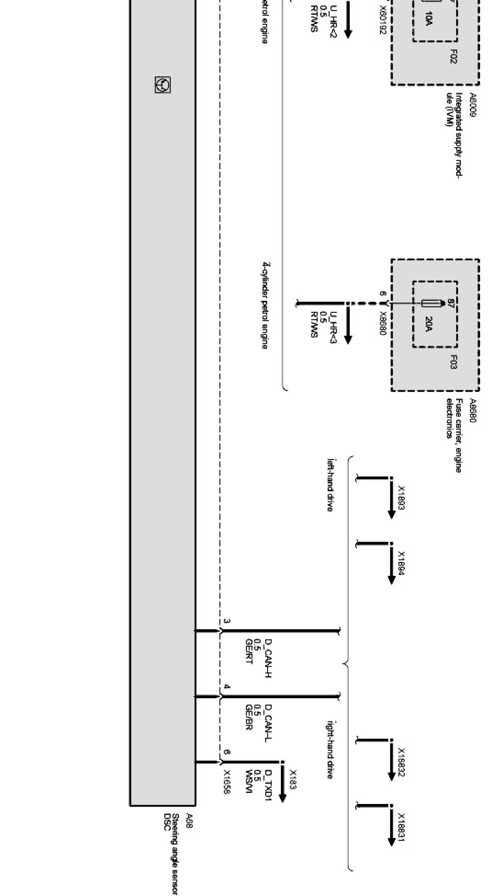

Operation CHARM
: Car repair manuals for everyone.
Home
>>
BMW
>>
2007
>>
X3 3.0si (E83) L6-3.0L (N52K)
>>
Repair and Diagnosis
>>
Diagrams
>>
Electrical Diagrams
>>
Chassis
>>
Wheel Slip Control System (X Series_X3-E83 Without DSC Dynamic Stabilty Control DXC83)
>>
Steering Angle Sensor
>>
Steering Angle Sensor (X Series_X3-E83 As of 09/06)
Steering Angle Sensor (X Series_X3-E83 As of 09/06)
Steering angle sensor Part 1:

Steering angle sensor Part 2:
